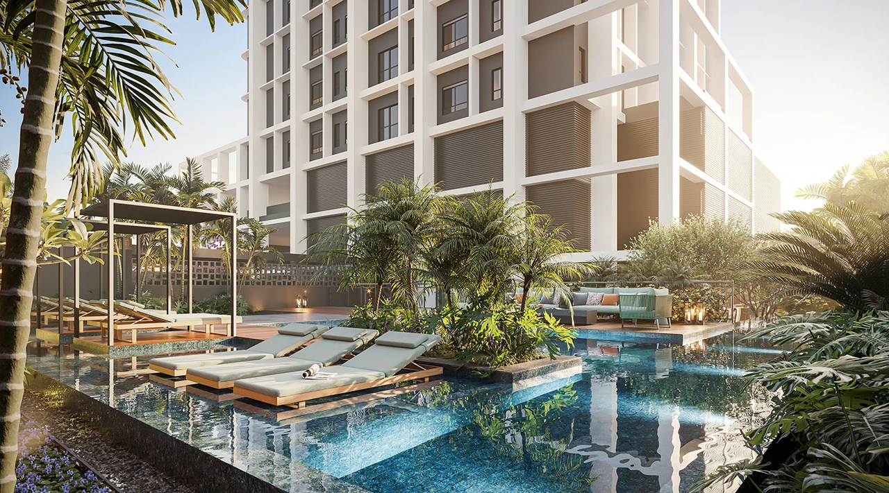

Juliana Alves@juu_alves8 · CRECI 5377
1/6
Todo mundo trava no primeiro imóvel achando que precisa de uma entrada gigante. Mito. Na planta dá pra começar com bem menos. Bora desmistificar 🧵

Urban Átrio · Palmas-TO
Todo mundo trava no primeiro imóvel achando que precisa de uma entrada gigante. Mito. Na planta dá pra começar com bem menos. Bora desmistificar 🧵

Urban Átrio · Palmas-TO